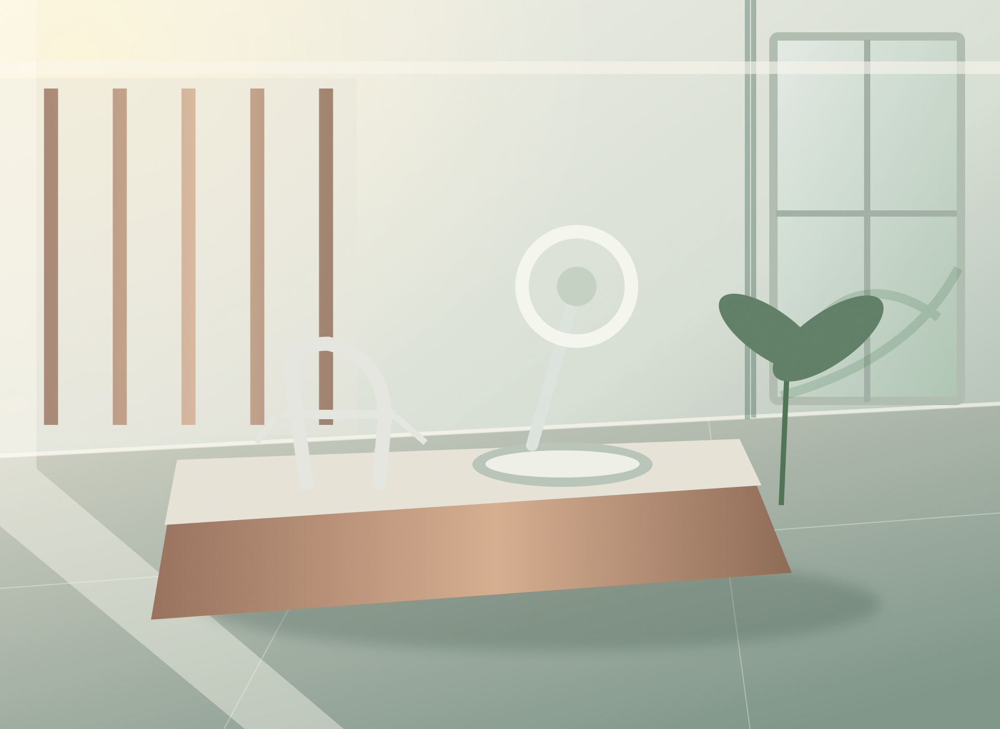

Explore
Understand areas of dentistry and the limits of each approach.
Explore seven areas of dental care, understand common questions and try a sample appointment request. A fictional practice designed around clarity, not clinical promises.
Concept project · fictional dental clinic

Compare areas of care and explore general guidance before requesting a professional assessment. A concept website without real clinicians or appointments.
Explore the concept ↗Each area has its own page with general information, possible indications, limitations and common questions. No content replaces a professional assessment.
Oral health assessments, prevention and ongoing care.
↗02 / Area of careThoughtful planning for tooth alignment and bite relationships.
↗03 / Area of careIndividual assessment of tooth replacement options.
↗04 / Area of careInformation on gum health and tooth-supporting tissues.
↗05 / Area of careRestoring form and function through individual planning.
↗06 / Area of careA clear introduction to care inside the tooth.
↗07 / Area of careConsidering the appearance of teeth without neglecting oral health.
↗07 / DisciplinesBrowse all areas of care↗A useful digital experience can introduce possibilities without oversimplifying decisions that need individual clinical assessment.
Understand areas of dentistry and the limits of each approach.
Clear starting points and answers to common questions.
Try an illustrative date and time selection without a real booking.
These architectural illustrations are original design concepts. They do not depict a real clinic.
Explore the concept ↗

Architectural illustration · fictional space, not a real clinic · Pexels
Understand different disciplines and identify questions for a professional.
Choose illustrative options in a clear, privacy-conscious flow.
The journey ends with a confirmation explicitly labelled as a demo.